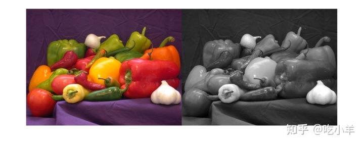
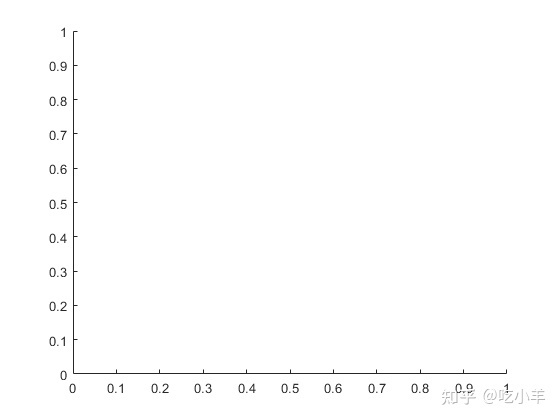
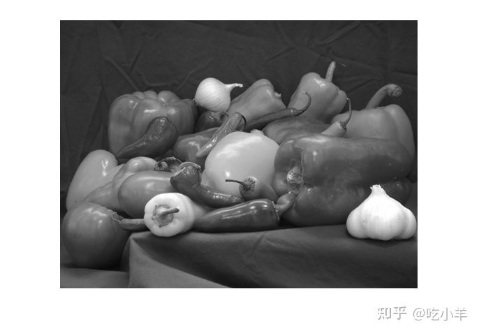
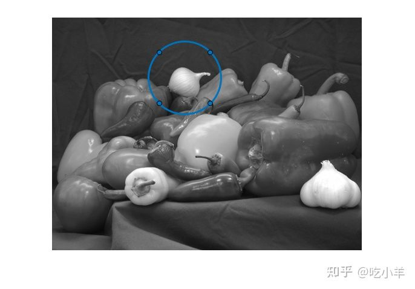
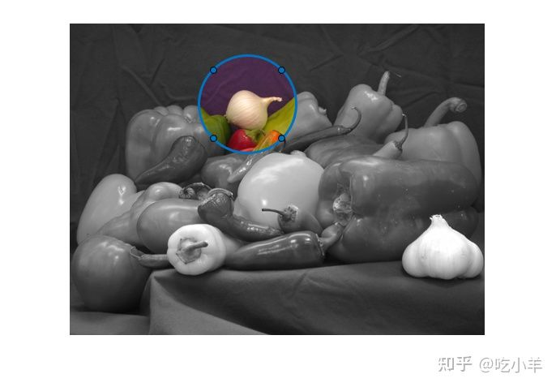
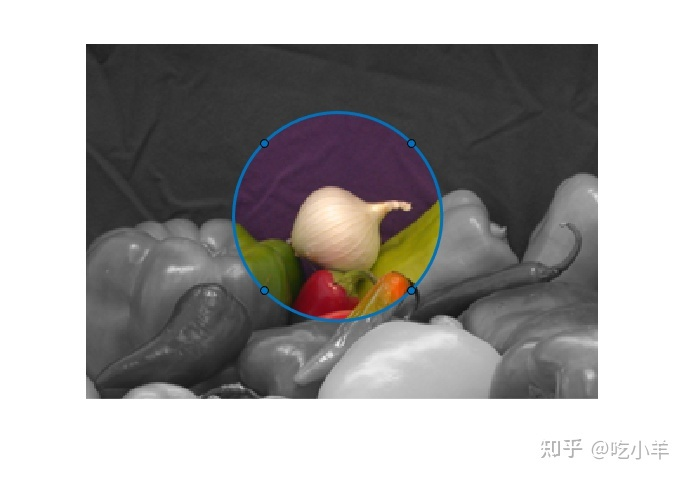
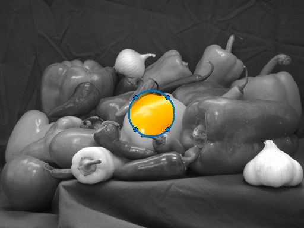

Home
本示例说明如何使用新的ROI功能创建交互式图像比较工具。在处理图像时，我们经常需要从视觉上评估功能对图像的影响。有些效果很明显，例如边缘滤镜。但是某些影响更加微妙，需要仔细检查。
将样本图像读入工作区
将样本图像读取到工作区中，然后创建该图像的灰度版本。使用imshowpair函数查看两个图像。montage选项并排显示图像。
im = imread('peppers.png');
imgray = rgb2gray(im);
figure;
imshowpair(im,imgray,'montage')

使用ROI设置两个图像的Alpha层（透明度），以便一个图像仅在ROI内部显示。该选择性视图遵循ROI，因此可以交互移动。创建一个新图形和一个轴。
hFigure = figure();
hAxes = axes('Parent', hFigure);

将两个图像堆叠在同一轴上。
hImage1 = imshow(im, 'Parent', hAxes); drawnow; % Ensure the image gets drawn. hold on; hImage2 = imshow(imgray, 'Parent', hAxes); hold off;

在轴上创建圆形的ROI。
centerLocation = [220, 100];
radius = 60;
hC = images.roi.Circle(...
'Parent', hAxes,...
'FaceAlpha',0,...
'Center',centerLocation,...
'Radius', radius);

创建一个侦听器，以侦听在ROI（圆圈）位置上的变化。在此示例的末尾定义了updateAlpha函数。
addlistener(hC,'MovingROI', @updateAlpha);
第一次手动执行回调。
updateAlpha(hC)

模拟放大一个区域。
hC.Parent.XLim = [75 370]; hC.Parent.YLim = [0 205];

该文件包含实现此图像比较工具的功能的源代码。此代码侦听两个附加事件。当用户输入“ t / T”键以切换哪个图像在顶部时。该代码还侦听鼠标滚轮以增加或减小ROI的半径。
edit helperImageComparer
使用中的工具的动画

回调函数以更新Alpha层
回调函数可在移动ROI对象时更新Alpha层。
function updateAlpha(hC, ~) hImages = findobj(hC.Parent,'Type','image'); % Create a BW mask from the Circle ROI mask = hC.createMask(hImages(1).CData); % Set the alpha data so that the underlying image shows through % only inside the circle set(hImages(1),'AlphaData', ~mask); end
======================================================================
我的测试结果及程序
下面是我测试的代码：

注：本文根据MATLAB官网内容修改而成。